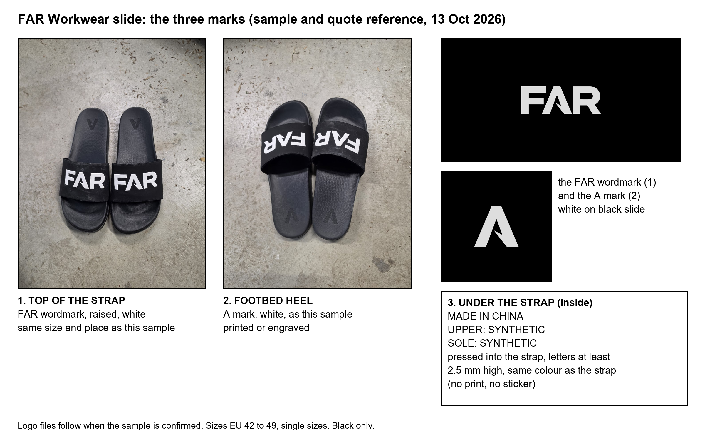

Slide design sheet for Mike (Taihui)
Built from our sample photos and the logo files. Tap the picture to open it full size.

Goes with this message: "The design sheet is attached: FAR raised in white on top of the strap and the A on the footbed heel, both as on our sample photos, and the three lines pressed into the underside of the strap, letters at least 2.5 mm high. The logo files follow when we confirm the sample."
13 Oct 2026. Unlisted link, anyone holding it can open it.